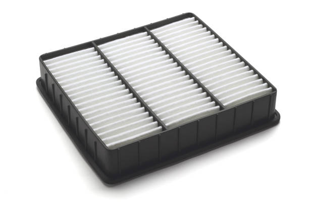

Solutions Page
Solutions Page
Air Filters. Air filters filter out the dust from the air, but are very ineffective for fixing air pollution over a large area, only for small indoor places, like houses or rooms. Click on the button to find out more:
Moving to Renewable Energy Sources. This would slow our energy production, while also would stop our pollution. While this is effective, it can really harm our economy, so it shouldn’t be done quickly, and there should be many people calculating how many renewable factories would be needed to keep up with our current energy production.
Advocacy for Air Pollution. Not many people realize the worrisome reality of this potential cause of the world ending. So, in order for them to know, we have to tell them about it.
Another type of advocacy would include people telling others about small solutions. These small solutions include:
- Turn off the lights
- Don’t continually use a device that requires a lot of energy
- Use a bike or walk instead of taking a car
- If not possible, take public transportation
The game is really fun. There are many things that can tie it together with real life. For example, in real life, air pollution can be almost deadly when the Air Quality Health Index of a certain area becomes 10. In the game, this is when the air pollution becomes 100. The goal is to be able to get enough energy to migrate to a different planet before the air pollution kills the player. This is like real life, where the goal is to not die from air pollution, but to fight it.
{kind=link}
{kind=link}
{kind=link}
{kind=link}